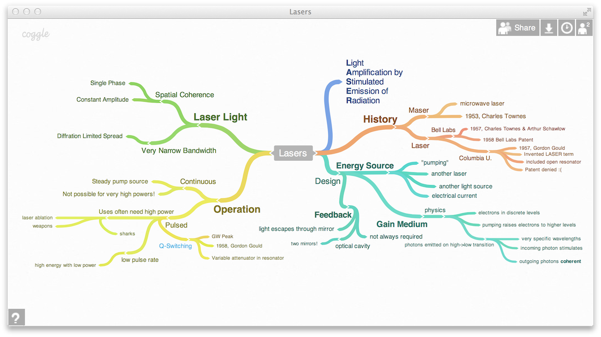

How It Works
Which of these do you do you think is the easiest to understand?
A revisionary exegesis is the basis for the book.
A revisionary exegesis[1] is the basis for the book.
[1]'Exegesis' refers
to a critical interpretation of a text.
Note that 'exegesis' refers to a critical interpretation of a text.
A revisionary exegesis is the basis for the book.
Most learners will find the final text easiest to interpret. It illustrates the pre-training principle, which states that learners find it easier to learn when they have been 'pre-trained' with information (such as definitions of unfamiliar words) that makes it possible for them to understand new vocabulary or concepts before they encounter the instructional content.
In five out of five tests, people performed better on problem-solving transfer tests when a multimedia lesson was preceded by pre-training in the names and characteristics of each key component.
The median effect size was d = 0.85. Richard E. Mayer
Learn More
Read the abstract of Ramsey Musallam's dissertation,
The effects of using screencasting as a multimedia
pre-training tool to manage the intrinsic cognitive
load of chemical equilibrium instruction for
advanced high school chemistry students.
Then, read the Conclusion and Implications sections, which begin on page 96 (using the numbering on the pages) or
page 108 (using the numbering at the top of the screen).
Your Turn

Coggle is a fantastic tool for creating mindmaps. And it is easy to learn --
just watch the ninety second video on Coggle's homepage, and you'll know all you
need to know.
Think of a lesson that you might design and/or teach in the future. Create a Coggle diagram with
your lesson topic in the middle. Then, add branches for concepts and terms that should be pre-trained. Finally,
add specific ideas for pre-training for the concepts and terms.